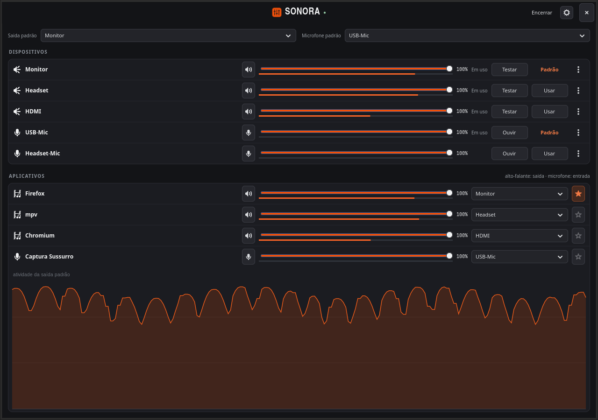
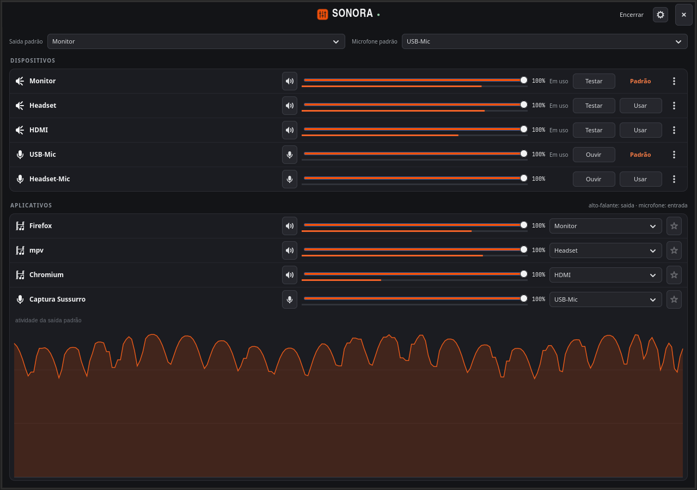
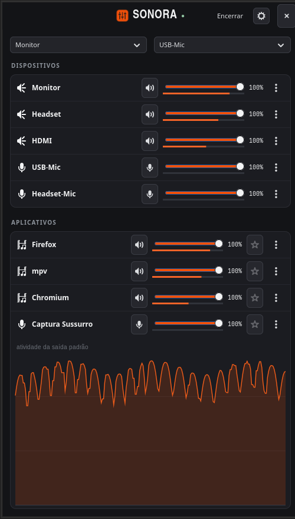
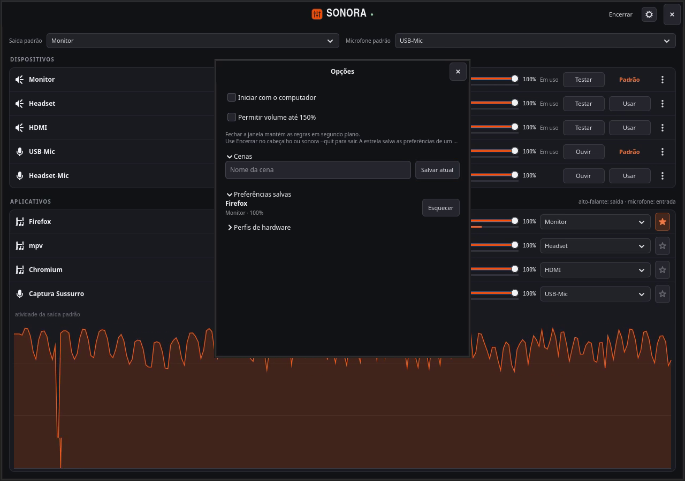

PipeWire · Omarchy · lista única
Volume, microfone e destino de cada app numa lista só. Grafite e laranja. Entra no tile como qualquer janela. Não manda no Hyprland.
Gravado do app real numa bancada isolada. Narração: Lucas Oliveira, OmniVoice Studio.
Dispositivos e aplicativos juntos. Sem abas. Cada linha tem mudo, volume, medidor e destino.
Pede 360 px ao compositor. Abaixo de 560 px, Testar, Usar e a rota vão pro menu. A linha continua inteira.
Zero hyprctl, zero float, zero auto-resize. A sobra da tile vira o gráfico de atividade.
Abre, ajusta o que está tocando, fecha. As regras ficam em segundo plano.
Pelo lançador do Omarchy ou sonora no terminal. Conecta no PipeWire da sessão.
Mudo, volume, Testar na saída, Ouvir no microfone. Usar define o padrão do sistema.
A estrela guarda destino, volume e mudo. Quando o app reabrir, a rota volta.
As regras continuam. Encerrar no cabeçalho, ou sonora --quit, pra sair de verdade.
As capturas abaixo são do Sonora rodando contra um PipeWire privado de demonstração, em 15/09/2026. Nada de mock.

Saída padrão e microfone padrão ficam numa barra no topo. Embaixo, a lista: saídas, entradas, playback e captura. Encerrar e a engrenagem estão no cabeçalho. Não tem barra de status.
Quando o mosaico é mais alto que o conteúdo, o cartão de Aplicativos estica. O rodapé vira o monitor de atividade da saída padrão: uns 8 segundos de histórico, as mesmas −60 a 0 dBFS. Em janela compacta ele some, porque a altura mínima é zero.


Testar, Usar, rota e as legendas da barra de padrões passam pro menu ⋯. Nomes ganham reticências. O volume fica com o espaço que sobra. Medido em 15/09/2026: a linha compacta de dispositivo pede 286 px, a de app 322 px. O cliente pede 360 px ao compositor pra ninguém esmagar a linha.
A engrenagem abre as opções. Uma cena grava padrões, volumes, mudo e destinos. Aplicar só mexe no que está disponível: não abre app, não liga hardware. A estrela é a preferência de um app. Volume até 150% é opt-in.

Os três falam com PipeWire. A diferença é o que cabe numa tile do Hyprland, e o que o app se permite fazer com o compositor.
| Sonora | pwvucontrol | pavucontrol | |
|---|---|---|---|
| Lista | Uma lista. Sem abas. | Abas (Playback, Recording, Output, Input, Configuration) | Abas clássicas de playback, recording, devices, configuration |
| Tile do Hyprland | Entra no mosaico. Não chama hyprctl, não flutua, não se redimensiona. | Applet GTK4 genérico. Sem contrato de mosaico. | Janela GTK clássica. Sem contrato de mosaico. |
| Modo estreito | Compacto abaixo de 560 px. Mínimo 360 px. | Não documenta um modo compacto de uma coluna. | Feito pra janela larga, com uma linha por canal. |
| Lembrar o app | Estrela: destino, volume e mudo. | Não lista persistência por aplicativo. | Não lista persistência por aplicativo. |
| Cenas | Salva e aplica o que está disponível. | Não tem. | Não tem. |
| Sobra da tile | Gráfico de atividade da saída padrão. | Não. | Não. |
| Testar / Ouvir | Tom na saída, escuta do microfone na saída padrão. | Não lista tom de teste nem escuta auxiliar. | Feedback de volume (desligável no 6.2). |
| Licença | MIT | GPL-3.0 | GPL-2.0-or-later |
Sonora: código e testes deste repositório em 15/09/2026 (app.py, README.md, tests/test_layout.py, LICENSE). pwvucontrol: README com o recorte de features de 04/05/2024 e atalhos de abas no 0.5.0 (17/10/2025); último release 0.5.3 em 08/07/2026; licença GPL-3.0 no repositório. pavucontrol: página do projeto em freedesktop.org, GTK 4 no 6.0 (21/05/2024) e 6.2 (notas de 17/09/2025). Se o concorrente mudou, abre um issue.
No Omarchy desta máquina, GTK 4, PyGObject, Cairo, libpulse e uv já estavam lá. O venv usa os pacotes GTK do Python do sistema.
# clone e instala o lançador
git clone https://github.com/LucasOl1337/sonora
cd sonora
./install.sh
sonora
O instalador coloca ~/.local/bin/sonora, o .desktop e, no Omarchy, ~/.config/hypr/sonora.lua pra integrar a janela ao mosaico. Não mexe no Sussurro, nos atalhos nem no PipeWire. Depois de uma troca de versão maior do Python, recria o .venv e roda o instalador de novo.